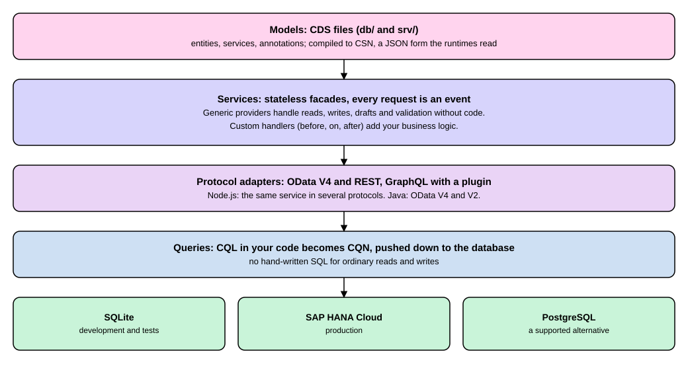

CAP Concepts
|
This content was generated with the assistance of AI and should be verified against the official documentation before being relied on in production. |
A business application on SAP BTP needs the same pieces again and again: a description of the business data, a way to store it, an interface that other programs and browsers can call, and a place for the rules of the business. The SAP Cloud Application Programming Model (CAP) is SAP’s framework that supplies those pieces, so that you write down the data and the rules and the framework does the repetitive work between them. This page explains the ideas that make CAP work, before you meet its commands and files: the modeling language and its compiled form, services as thin windows onto the data, the habit of treating every request as an event, queries that are handed to the database, and protocol adapters that let one service speak several web protocols. It is written for CAP Node.js 10.2 (@sap/cds 10.2.2, which needs Node.js 22.12 or newer) and CAP Java 5.2 (Java 21 or newer, Java 25 recommended). The concepts are the same on both runtimes, and they do not depend on where the application runs: the platform choice between Cloud Foundry and Kyma only matters when you deploy. The product is still documented as SAP Business Technology Platform (SAP BTP), and SAP now presents BTP capabilities as part of SAP Business AI Platform; the pages cited at the end say so.
The listings on this page that compile or run a model were run for real, in a copy of this site’s CAP lab, with CAP Node.js 10.2 and the SQLite in-memory database. Nothing on this page needs an SAP BTP account.
Before you read
-
What Is SAP?: what SAP software is and where custom applications fit around it.
-
Deployment Options: the ways SAP S/4HANA is run, which tells you where a CAP application sits next to it.
-
Basic JavaScript or Java reading ability is enough; the listings are short. A previous contact with a web API (
GETandPOSTrequests, JSON) helps, and so does the page GraphQL if you want to compare GraphQL with the other protocols named here.
Key terms
-
CDS (Core Data Services): the modeling language of CAP, in which you declare entities, services and annotations.
-
CSN (Core Schema Notation): the machine-readable form that CDS source is compiled to and that the runtimes and the compiler targets read.
-
CQL (Conceptual Query Language): the SQL-like language in which CAP queries are written, independent of any database.
-
CQN (Core Query Notation): the plain-object form of a query that CAP passes around at runtime and translates to SQL.
-
Event handler: a function registered with a service to run before, on or after a given event, in which your business logic lives.
-
Protocol adapter: a part of the runtime that turns requests of one web protocol, such as OData, into protocol-neutral CAP requests and back.
-
Generic provider: built-in service behavior that serves reads, writes and drafts from the model alone, without code written by you.
The running example
The examples use the small CAP project of this site’s SAP lab, a teaching model of the expense claims that employees of Example Trading Co. (EX01) submit. It is a teaching model, not SAP software, and it is shown here in full. The project has one domain model, one service and one handler file.
using { cuid, managed } from '@sap/cds/common';
namespace sap.guide.expenses;
entity Claims : cuid, managed {
title : String(80);
status : String(1) default 'N';
amount : Decimal(9,2);
}Source: CAP: Core Concepts
using { sap.guide.expenses as db } from '../db/schema';
service ExpenseService {
@odata.draft.enabled
entity Claims as projection on db.Claims;
}Source: CAP: Core Concepts
The first file declares what a claim is. The aspects cuid and managed come from @sap/cds/common; they add an ID and the fields that record who created and changed a row and when. The second file declares what outsiders may do with claims: it publishes a view of the table as the service ExpenseService. The third file, srv/expense-service.js, is the handler and appears further down. Together they show the layers in the figure below, from the top: models, services, protocol adapters, queries and databases.

Source: CAP: Core Concepts
Models: CDS and CSN
CAP starts from models. The page of the CAP documentation on core concepts names four primary building blocks: Core Data Services (CDS) as the modeling language, the service runtimes for Node.js and for Java, platform integrations, and a command-line interface. Its summary of how they fit is that models fuel runtimes: CAP creates generic service providers from the service models, and at run time these translate protocol queries such as OData into SQL sent to the database.
CDS has two forms. The source form you write is the Conceptual Definition Language (CDL), which the documentation describes as a concise and more expressive relative of SQL’s data definition language. For processing at run time the models are compiled to a plain object notation, the Core Schema Notation (CSN). The CSN specification calls it a canonical format that can be plain JavaScript objects, JSON or YAML, and describes its top level as a dictionary named definitions, where each key is a fully qualified name and each value says what kind of thing it is, such as entity, service or type. For deployment to a database, the CSN is translated to native SQL data definition statements. The same page lists SQLite and H2 as the databases for development and SAP HANA and PostgreSQL for production.
You can watch that chain with the command-line tool. The command cds compile compiles models to CSN or to other formats, and the option --to picks the format. The CSN specification names JSON as one rendering of CSN, so --to json prints the CSN of the project (requires CAP Node.js with @sap/cds-dk 10.2.1; run in the copy of the lab).
npx cds compile srv --to jsonThe real output is 944 lines, because the common aspects bring their own definitions. Shortened to the beginning, the service entity, the table entity and the end, it reads as follows.
{
"definitions": {
"ExpenseService": {
"@source": "srv/expense-service.cds",
"kind": "service"
},
"ExpenseService.Claims": {
"kind": "entity",
"@odata.draft.enabled": true,
"projection": {
"from": {
"ref": [
"sap.guide.expenses.Claims"
]
}
},
... (elements of the projection shortened)
},
"sap.guide.expenses.Claims": {
"kind": "entity",
"includes": [
"cuid",
"managed"
],
"elements": {
... (ID and the managed fields shortened)
"title": {
"type": "cds.String",
"length": 80
},
"status": {
"type": "cds.String",
"length": 1,
"default": {
"val": "N"
}
},
"amount": {
"type": "cds.Decimal",
"precision": 9,
"scale": 2
}
}
},
... (common definitions shortened)
},
"meta": {
"creator": "CDS Compiler v7.2.1",
"compilerCsnFlavor": "inferred",
"flavor": "inferred"
},
"$version": "2.0"
}Source: real output of cds compile srv --to json in the copy of the lab (CAP Node.js 10.2, compiler 7.2.1); format described at CAP: Schema Notation (CSN)
Three things are visible. The kind entries are the values from the specification: one service and two entities. The service entity is a projection (a projection property with a from reference) on the table entity, which is how CDL’s as projection on is written in CSN. And the string length of title, the default of status and the decimal precision of amount are all carried over from the model, so every tool that reads the CSN knows them.
Because the CSN is the one shared description, other formats are generated from it rather than written by hand. The CSN specification names OData’s metadata, OpenAPI and SQL among the targets, and the output of cds compile --to sql for the same project shows the database target (SQLite dialect, which is also what the command printed by default here).
npx cds compile srv --to sqlShortened to the table and the view of the service (the real output has 71 lines and also holds the tables and views for drafts):
CREATE TABLE sap_guide_expenses_Claims (
ID NVARCHAR(36) NOT NULL,
createdAt TIMESTAMP_TEXT,
createdBy NVARCHAR(255),
modifiedAt TIMESTAMP_TEXT,
modifiedBy NVARCHAR(255),
title NVARCHAR(80),
status NVARCHAR(1) DEFAULT 'N',
amount REAL_DECIMAL(9, 2),
PRIMARY KEY(ID)
);
CREATE VIEW ExpenseService_Claims AS SELECT
Claims_0.ID,
Claims_0.createdAt,
Claims_0.createdBy,
Claims_0.modifiedAt,
Claims_0.modifiedBy,
Claims_0.title,
Claims_0.status,
Claims_0.amount
FROM sap_guide_expenses_Claims AS Claims_0;Source: real output of cds compile srv --to sql in the copy of the lab; the dialect option is described at CAP: CAP-Level Database Integration
The namespace sap.guide.expenses became the table name prefix, the entity Claims became a table, and the service entity became a view on that table: the service is a window onto the data, not a copy of it. The same page of the documentation shows that the dialect is selectable (the example there is --dialect hana), and the same model compiled with --dialect hana and --dialect postgres in the lab copy gave the same column list with each database’s own types: TIMESTAMP and DECIMAL(9, 2) for both, with NVARCHAR for SAP HANA and VARCHAR for PostgreSQL where SQLite printed NVARCHAR, TIMESTAMP_TEXT and REAL_DECIMAL. So the model is written once and the database-specific part is generated, which is the first of the two meanings of "agnostic" that CAP uses; the second, for protocols, follows below.
Services: stateless facades
Services are the most central concept of CAP for behavior. The core-concepts page states the design principles in six short lines: every active thing is a service; services establish interfaces declared in service models; services react to events, synchronous and asynchronous; services run queries that are pushed down to the database; services are agnostic of platforms and protocols; and services are stateless and process passive data.
Two of these need a plain-words reading. Services are facades: a service usually exposes a denormalized projection of the domain model, such as a flat list of claims, and the interface of the service is inferred from that projection. That is what ExpenseService.Claims is above. Services are stateless and process passive data: the data that flows through them is plain structures (plain JavaScript records in Node.js, hash maps in Java) with no behavior attached, so a service keeps nothing between two requests, and rules such as validation live in event handlers rather than inside data objects. The documentation adds that a service’s implementation is the sum of all event handlers registered with it, and that framework features such as the database, messaging and remote service proxies are services too, built with the same API.
Where the service has no handlers of its own, a generic provider serves it. The lab’s ExpenseService has a handler, but reading, creating and updating claims, and the draft handling switched on by @odata.draft.enabled, come from the generic providers (the handler adds a single rule, below).
Events: everything that happens is an event
The next idea is the one that makes the others fit together. At run time everything is triggered by, or reacts to, an event. A request from a browser, a message from a queue and a call from another service all arrive at a service as events, and from the viewpoint of a handler there is close to no difference between a synchronous request and an asynchronous event message. Events may be local or remote: the documentation says the way you connect to a service and listen to its events is the same whether the service runs in the same process or elsewhere.
You register handlers for the phases of an event: before (frequently used to validate input), on (the handler that actually fulfills the request, for example by reading or writing the database) and after (frequently used to enrich outbound data). Handlers can be registered for one entity or generically, for example for all requests served by a service. The handler file of the lab has one validation, written for the before phase:
import cds from '@sap/cds'
export default class ExpenseService extends cds.ApplicationService {
init() {
this.before('SAVE', 'Claims', req => {
if (req.data.amount < 0) req.error(400, 'Amount must not be negative', 'in/amount')
})
return super.init()
}
}The listing registers one handler in the before phase of the event SAVE for the entity Claims. According to the Node.js documentation of draft handling, the SAVE event fires when a user saves or activates a draft, and for non-draft entities it is a shortcut for the combination of CREATE and UPDATE. The handler records an error with req.error; the documentation says that if errors were collected in the before phase, request processing is aborted and an error response is returned. The call return super.init() keeps the built-in behavior of the generic provider in place. The same pattern exists in Java: the CAP Java documentation describes event handler classes as Spring beans that implement EventHandler, carry a ServiceName annotation, and mark their methods with @Before, @On or @After together with the event and entity they handle. The two runtimes are two implementations of the same event model.
Anyone can register handlers on a service, not only its owner. The documentation calls this intrinsic extensibility: a reuse service can be extended by adding handlers from outside, and the framework services such as the database service can be extended the same way. A service provider can also declare business-level events in the service model as explicit extension points.
Queries: CQL, CQN and push-down
Handlers and clients read and write data with queries. CAP writes them in the Conceptual Query Language (CQL), a derivative of SQL that is used independently of SQL and databases. The documentation compares CQL with GraphQL, OData and SQL and calls CQL a superset of the other query languages, which is what makes it possible to translate from and to all of them.
At run time the query is not text but a plain object, the Core Query Notation (CQN). A protocol adapter translates an incoming request into a CQN object, and the documentation shows one query in four forms: CQL, GraphQL, OData and CQN. You can see the CQN of a query of the lab with the fluent API of Node.js (cds.ql) and with the parser for CQL text (requires CAP Node.js; run in the copy of the lab).
import cds from '@sap/cds'
const { SELECT } = cds.ql
const q = SELECT.from('ExpenseService.Claims').columns('title', 'amount').where({ status: 'N' })
console.log(JSON.stringify(q.SELECT))
const parsed = cds.parse.cql("SELECT title, amount FROM ExpenseService.Claims WHERE status = 'N'")
console.log(JSON.stringify(parsed.SELECT))Both statements printed the same line:
{"from":{"ref":["ExpenseService.Claims"]},"columns":[{"ref":["title"]},{"ref":["amount"]}],"where":[{"ref":["status"]},"=",{"val":"N"}]}Source: real output of the listing above in the copy of the lab
The two ways of writing the query, one built from method calls and one parsed from CQL text, produce the same CQN, and the object says what it means with references (ref) and values (val) instead of a text that a database would have to parse. Last comes push-down: the runtime translates the CQN into the native SQL of the database and sends it there, so that the database optimizes and executes it. The copy of the lab was started with the SQL log switched on (DEBUG=sql, with the server on a free port) and asked for the claims whose status is N, with the OData query options $filter and $select; the log shows the one SQL statement that the request became (shortened to the part after FROM; the real line is longer, because the statement also builds the JSON result in the database).
[odata] - GET /odata/v4/expense/Claims { '$filter': "status eq 'N'", '$select': 'title,amount' }
[sql] - BEGIN
[sql] - SELECT json_insert('{}', ... ) as _json_ FROM (SELECT "$C".title,"$C".amount,"$C".ID as ID FROM ExpenseService_Claims as "$C" WHERE "$C".status = ? ORDER BY ID ASC LIMIT ? ) [ 'N', 1000 ]
[sql] - COMMITSource: real output of the lab server (CAP Node.js 10.2, SQLite in memory), shortened where marked; behavior described at CAP: Core Concepts
The filter became a WHERE clause with a bound parameter, the selected fields became the column list of the inner query, and the table in the statement is the service’s view ExpenseService_Claims from the compiled SQL above. Nobody wrote that statement. The documentation describes the idea as push-down: the runtime sends the query to the database, where it is optimized and executed, instead of filtering the rows in the application.
Protocol adapters: one service, several protocols
A service in a model does not say how it is called. The documentation lists protocol-agnosticism among the principles, and relates CAP to hexagonal architecture, the style that puts the application in the middle and surrounds it with adapters for the outside world: protocol adapters translate low-level protocols such as HTTP, REST, OData and GraphQL into protocol-agnostic CAP requests, and the application model and its event handlers never see the difference.
What each runtime ships is documented separately. For Node.js the documentation says the framework provides adapters for OData V4 and REST out of the box, and GraphQL can be served by using the open source package @cap-js/graphql; the default paths are /odata/v4, /rest and /graphql. The package’s own page calls it a protocol adapter for GraphQL, enabled with npm add @cap-js/graphql, and describes it as being in an early general availability state with known limitations, such as no support yet for actions and functions. For Java the documentation of application services states that the CAP Java SDK provides protocol adapters for OData V4 and V2 by default, with the base paths /odata/v4 and /odata/v2. The protocols page of the documentation lists OData v2 and v4, OpenAPI, AsyncAPI and the Model Context Protocol (MCP) as supported.
In Node.js, the annotation @protocol chooses which protocols serve a service. To see the same lab service answer in two protocols, a scratch-only file was added next to the model (not part of the lab; it is shown in full and changes nothing else).
using ExpenseService from './expense-service';
annotate ExpenseService with @protocol: ['odata', 'rest'];Source: CAP: cds.serve in Node.js
With it, the startup log of the lab server says where the one service is now served:
[cds] - serving ExpenseService {
at: [ '/odata/v4/expense', '/rest/expense' ],
decl: 'srv/expense-service.cds:2',
impl: 'srv/expense-service.js'
}Source: real output of the lab server with the scratch-only file above (CAP Node.js 10.2)
A request to /odata/v4/expense/Claims returned the OData form of the claim (@odata.context, a value array) and a request to /rest/expense/Claims returned a plain JSON array of the same row. In both cases the log lines show the same view ExpenseService_Claims being queried. The path /graphql answered with HTTP 404 in this copy, because the GraphQL package was not installed: the adapter is optional in Node.js, as the documentation says. The CAP Java pages read for this page name OData V4 and V2 only, so a REST or GraphQL adapter for Java is not claimed here.
The same compiled model also feeds the OData metadata. cds compile srv --to edmx printed 205 lines of OData metadata, and its entity type for the claim reads, in part:
<EntityType Name="Claims">
<Key>
<PropertyRef Name="ID"/>
<PropertyRef Name="IsActiveEntity"/>
</Key>
<Property Name="ID" Type="Edm.Guid" Nullable="false"/>
...
<Property Name="title" Type="Edm.String" MaxLength="80"/>
<Property Name="status" Type="Edm.String" MaxLength="1" DefaultValue="N"/>
<Property Name="amount" Type="Edm.Decimal" Precision="9" Scale="2"/>Source: real output of cds compile srv --to edmx in the copy of the lab, shortened where marked; the supported formats are listed by cds compile --help of @sap/cds-dk 10.2.1
The length 80 of title, the default N and the decimal precision all come from the CSN shown earlier. The key also holds IsActiveEntity, which the draft feature (@odata.draft.enabled) added to the service.
One request through the layers
The following diagram puts the layers together for the OData request above. It follows the event model: the adapter creates a CQN object and hands it to the service as an event, the handler phases run, and the database service turns the CQN into SQL.
Source: CAP: Core Concepts and the real server log shown above
Node.js and Java side by side
The ideas above are shared; the notation differs.
| Concept | CAP Node.js 10.2 | CAP Java 5.2 |
|---|---|---|
Models |
CDS files compiled to CSN by the CDS compiler |
The same CDS files and the same language |
Service implementation |
A class that extends |
A Spring bean implementing |
Data in handlers |
Plain JavaScript records |
Hash maps, or typed accessor interfaces |
Queries |
CQL text or the fluent API of |
CQN built with |
Protocols served by default |
OData V4 and REST; GraphQL with |
OData V4 and V2 |
Databases |
SQLite for development; SAP HANA, PostgreSQL for production |
H2 for development; SAP HANA, PostgreSQL for production |
Databases
The figure names three databases. The database guide of CAP lists SQLite for in-memory development (H2 for CAP Java projects), SAP HANA as the default production database and PostgreSQL as supported, and says that you do not need to change CDS models or implementations to switch. The SAP HANA page calls SAP HANA Cloud the CAP standard database, recommended for productive use with full support for schema evolution and multitenancy. The PostgreSQL page names a limitation: multitenancy and extensibility are not yet supported on PostgreSQL. Which database to use is therefore a deployment decision on BTP, and a decision that the model does not need to know about. Moving to SAP HANA Cloud is part of the deployment pages that come later in this section and needs an SAP BTP account; it is not run here.
What the concepts buy you
The concepts have practical results. Because models are compiled to one shared description, a change in a CDS file reaches the database, the API metadata and the runtime together. Because services are stateless facades and requests are events, business rules sit in small handlers that can be tested by calling the service. Because queries are objects that are pushed down, the same code runs on SQLite on a laptop and on SAP HANA Cloud in production. Because protocols are adapters, adding another way to call a service does not touch the business logic. The pages that follow in this section put the concepts to work: the CDS domain model, handlers in Node.js, CAP Java and CAP security.
Summary
-
CAP is model-driven: you write CDS, the compiler turns it into CSN, and the runtimes, the database deployment and the API metadata all read the CSN.
-
Services are stateless facades over the domain model; their behavior is the sum of the event handlers registered with them, and generic providers supply the standard reads, writes and drafts.
-
Everything at run time is an event, handled in the phases
before,onandafter, in the same way for synchronous requests and asynchronous messages and on both Node.js and Java. -
Queries are written in CQL, carried as CQN objects and translated by the database service into native SQL; the lab log shows one OData request becoming one SQL statement.
-
Protocol adapters expose one service as OData V4 and, in Node.js, as REST, and as GraphQL with an optional package; CAP Java documents OData V4 and V2.
-
SQLite is the development database; SAP HANA is the default for production and PostgreSQL is supported, with the limitations on its page.
Try it
To do this by hand, follow the guide Your First CAP Service: it creates a CAP project with an entity and a service and calls the service in the browser.